|
I am a research scientist at Google Zurich, where I work on computer vision and machine learning with the focus on Neural Rendering and Generative Neural Networks. Previously, I was a postdoctoral researcher in the Visual Computing and AI department of Prof. Christian Theobalt at Max-Planck Institute for Informatics, where I worked on photorealistic rendering of humans and human-centric vision. I obtained my PhD under Prof. Didier Stricker at German Research Center for Artificial Intelligence (DFKI) Kaiserslautern on the topic of 3D shape representations for learning. I got my bachelor and masters degrees in the subject of Computer Science and Engineering from the Indian Institute of Technology Kharagpur, India (IIT Kharagpur). |
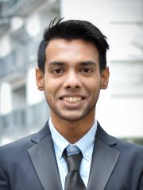 |
{kind=link}
ResearchI'm interested in computer vision, deep learning, generative AI, and image processing. Most of my research is about inferring the physical world (shape, motion, color, light, etc) from images, usually with radiance fields. Some papers are highlighted. |
| 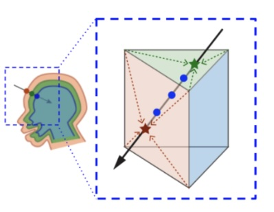 |
ShellNeRF: Learning a controllable high-resolution model of the Eye and Periocular region
Simon Li, Kripasindhu Sarkar, Abhimitra Meka, Marcel Bühler, Franziska Mueller, Otmar Hilliges, and Thabo Beeler
Eurographics 2024
[paper] [project page] |
| 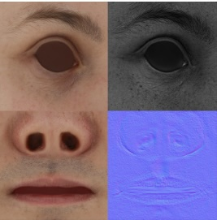 |
GANtlitz: Ultra High Resolution Generative Model for Multi-Modal Face Textures
Aurel Gruber, Edo Collins, Abhimitra Meka, Franziska Mueller, Kripasindhu Sarkar, Sergio Orts Escolano, Luca Prasso, Jay Busch, Markus Gross, and Thabo Beeler
Eurographics 2024
[paper] [project page] |

|
Egocentric Whole-Body Motion Capture with FisheyeViT and Diffusion-Based Motion Refinement.
Jian Wang, Zhe Cao, Diogo Luvizon, Lingjie Liu, Kripasindhu Sarkar, Danhang Tang, Thabo Beeler, and Christian Theobalt
Computer Vision and Pattern Recognition (CVPR), 2023
[paper] [project page] |
|
LitNeRF: Intrinsic Radiance Decomposition for High-Quality View Synthesis and Relighting of Faces
Kripasindhu Sarkar, Marcel C. Bühler, Gengyan Li, Daoye Wang, Delio Vicini, Jérémy Riviere, Yinda Zhang, Sergio Orts-Escolano, Paulo Gotardo, Thabo Beeler, and Abhimitra Meka.
SIGGRAPH Asia 2023
[paper] [project page] | |
|
Preface: A Data-driven Volumetric Prior for Few-shot Ultra High-resolution Face Synthesis.
Marcel Buehler, Kripasindhu Sarkar, Tanmay Shah, Gengyan Li, Daoye Wang, Leonhard Helminger, Sergio Orts-Escolano, Dmitry Lagun, Otmar Hilliges, Thabo Beeler, Abhimitra Meka
International Conference for Computer Vision (ICCV), 2023
[paper] [project page] | |
| 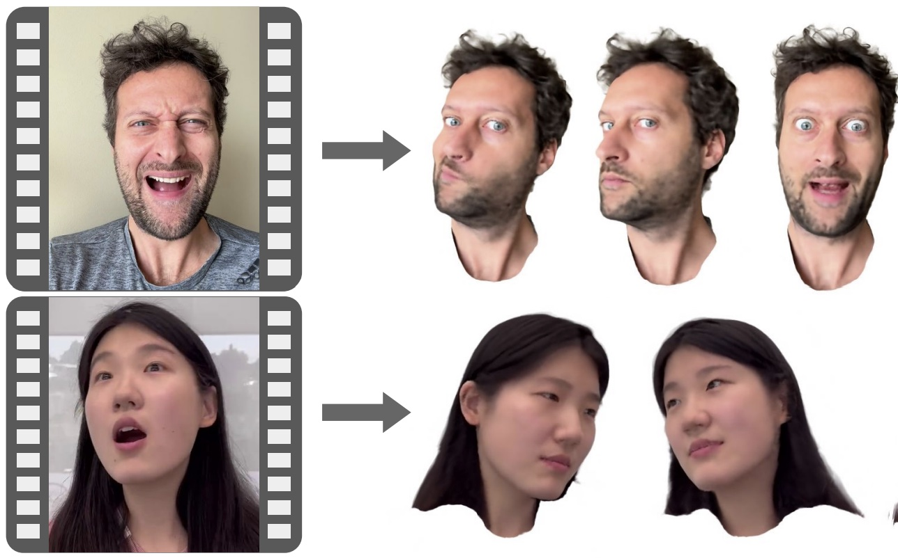 |
MonoAvatar: Learning Personalized High Quality Volumetric Head Avatars from Monocular RGB Videos.
Z. Bai, F. Tan, Z. Huang, K. Sarkar, D. Tang, D. Qiu, A. Meka, R. Du, M. Dou, S. Orts, R. Pandey, P. Tan, T. Beeler, S. Fanello and Y. Zhang.
Computer Vision and Pattern Recognition (CVPR), 2023
[paper] [project page] |
| 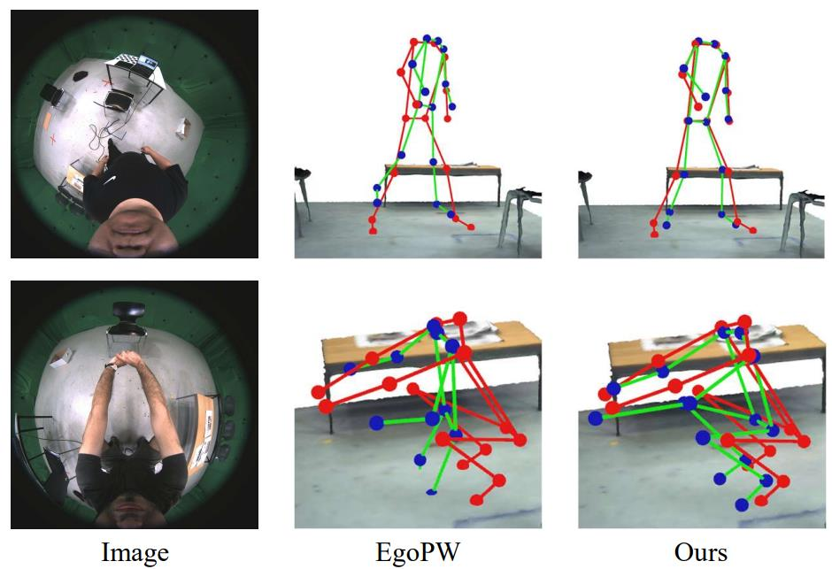 |
Scene-aware Egocentric 3D Human Pose Estimation.
J. Wang, D. Luvizon, L. Liu, W. Xu, K. Sarkar and C. Theobalt.
Computer Vision and Pattern Recognition (CVPR), 2023
[paper] [project page] |
| 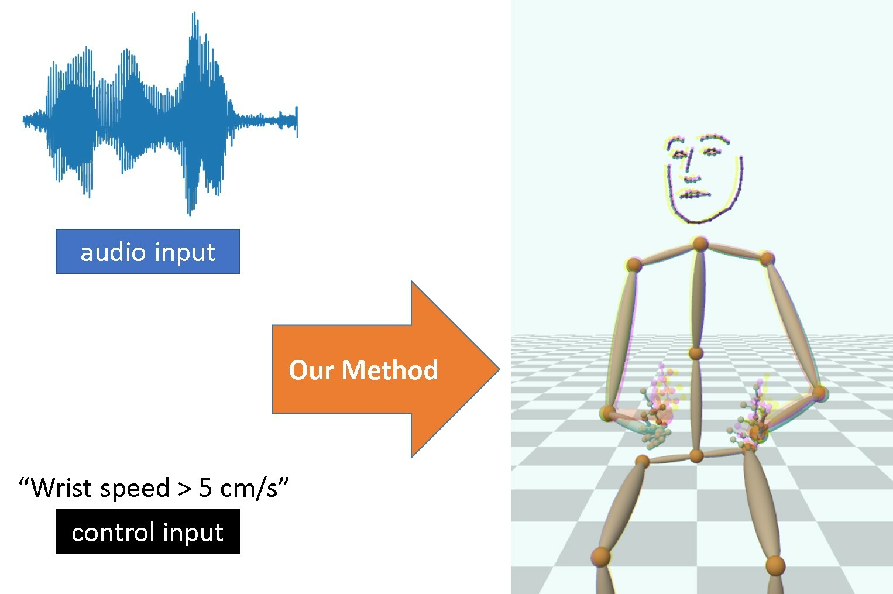 |
A Motion Matching-based Framework for Controllable Gesture Synthesis from Speech.
I. Habibie, M. Elgharib, K. Sarkar, A. Abdullah, S. Nyatsanga, M. Neff and C. Theobalt.
SIGGRAPH 2022
[paper] [project page] |
| 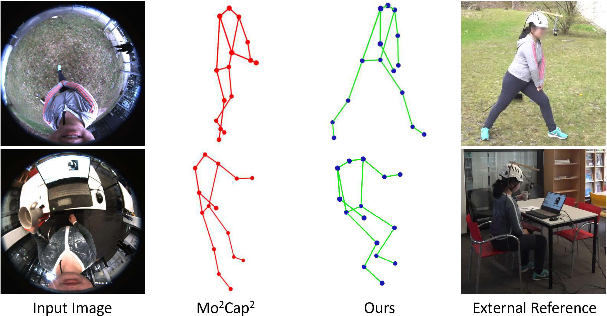 |
Estimating Egocentric 3D Human Pose in the Wild with External Weak Supervision.
J. Wang, L. Liu, W. Xu, K. Sarkar, D. Luvizon and C. Theobalt.
Computer Vision and Pattern Recognition (CVPR), 2022
[paper] [project page] |
| 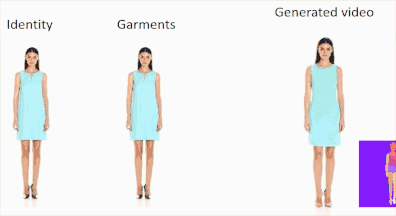 |
Style and Pose Control for Image Synthesis of Humans from a Single Monocular View.
K. Sarkar, V. Golyanik, L. Liu and C. Theobalt.
arXiv.org, 2021. (Withdrawn from SIGGRAPH 21)
[paper] [project page] |
| 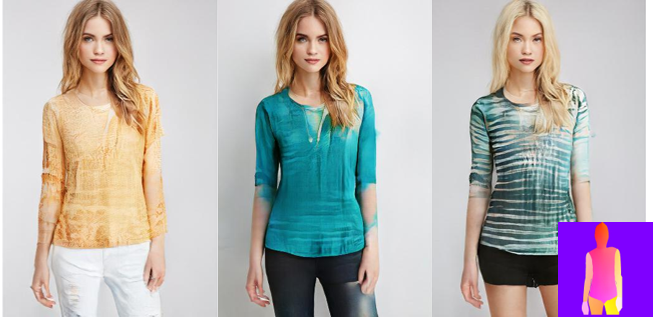 |
HumanGAN: A Generative Model of Humans Images
K. Sarkar, L. Liu, V. Golyanik, and C. Theobalt. International Conference on 3D Vision (3DV Oral), 2021 (Withdrawn from CVPR 2021) [paper] [project page] |
| 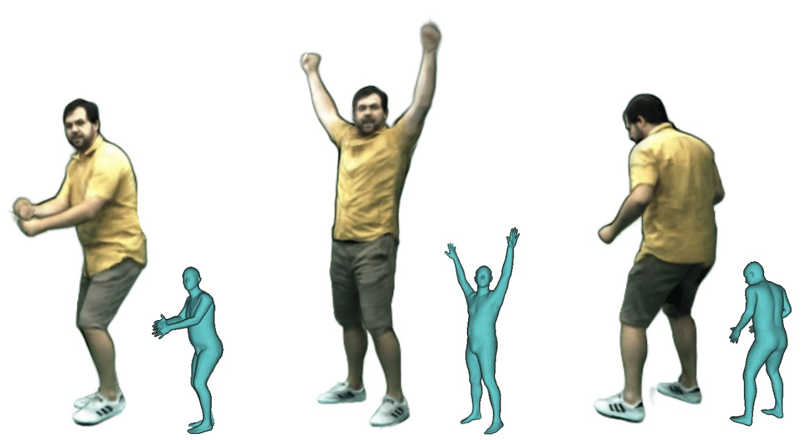 |
Neural Actor: Neural Free-view Synthesis of Human Actors with Pose Control.
L. Liu, M. Habermann, V. Rudnev, K. Sarkar, J. Gu and C. Theobalt.
SIGGRAPH Asia 2021
[paper] [project page] |
| 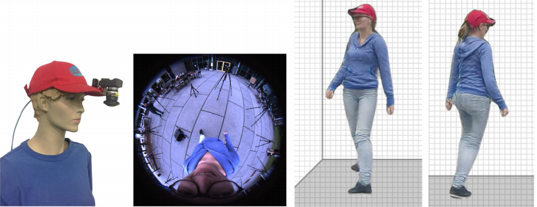 |
EgoRenderer: Rendering Human Avatars from Egocentric Camera Images
T. Hu, K. Sarkar, L. Liu, M Zwicker and C. Theobalt.
International Conference on Computer Vision (ICCV), 2021
[paper] [project page] |

|
Estimating Egocentric 3D Human Pose in Global Space
J. Wang, L. Liu, W. Xu, K. Sarkar and C. Theobalt.
International Conference on Computer Vision (ICCV), 2021
[paper] [project page] |

|
Pose-Guided Human Animation from a Single Image in the Wild.
J. S. Yoon, L. Liu, V. Golyanik, K. Sarkar, H. S. Park, and C. Theobalt. Computer Vision and Pattern Recognition (CVPR), 2021 [paper] [video] [project page] |
| 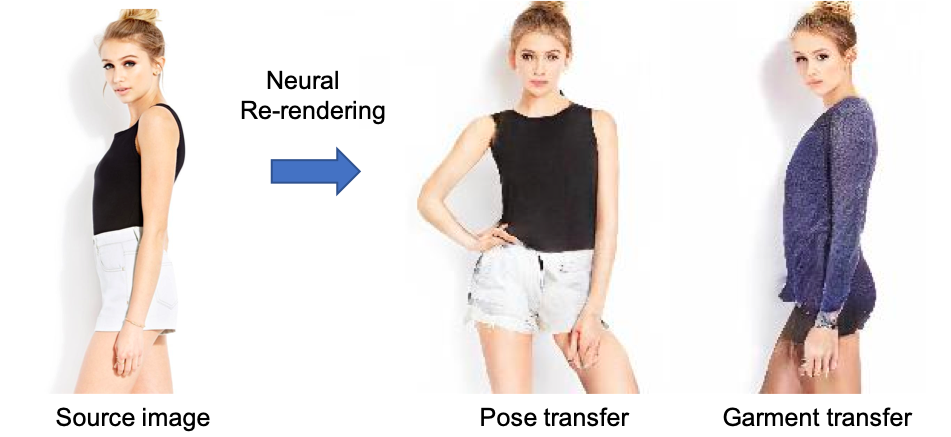 | Neural Re-Rendering of Humans from a Single Image. K. Sarkar, D. Mehta, W. Xu, V. Golyanik and C. Theobalt. European Conference on Computer Vision (ECCV), 2020. [paper] [supplement] [video] [project page] Featured in "ECCV 2020 Daily" (link) |
| 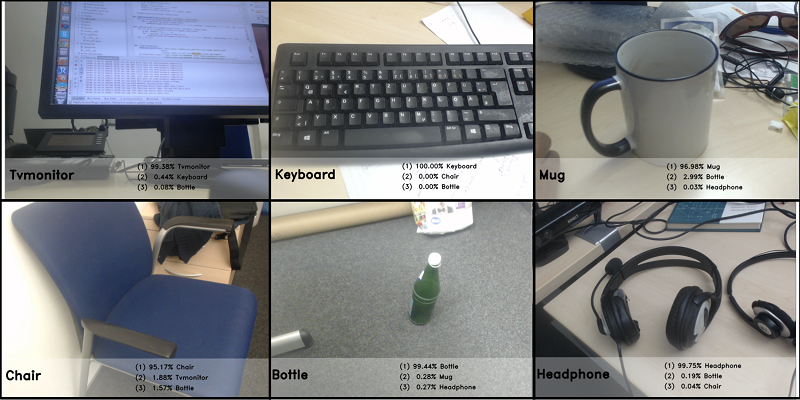 | Simple domain adaptation for CAD based object recognition. K. Sarkar and D. Stricker. International Conference on Pattern Recognition Applications and Methods, 2019. [paper] |
| 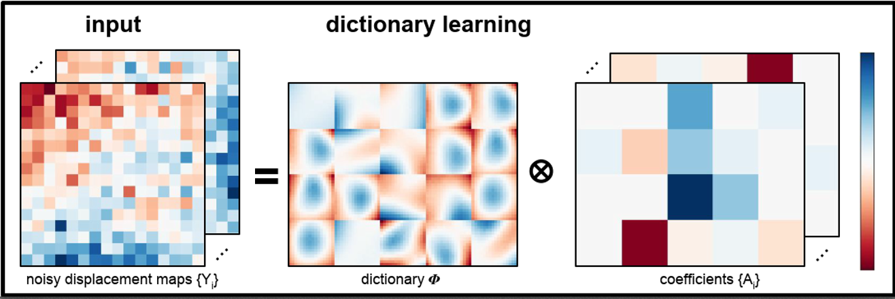 | Structured low-rank matrix factorization for point-cloud denoising. K. Sarkar, F. Bernard, K. Varanasi, C. Theobal, and D. Stricker. International Conference on 3D Vision (3DV), 2018 [paper] [supplement] |
| 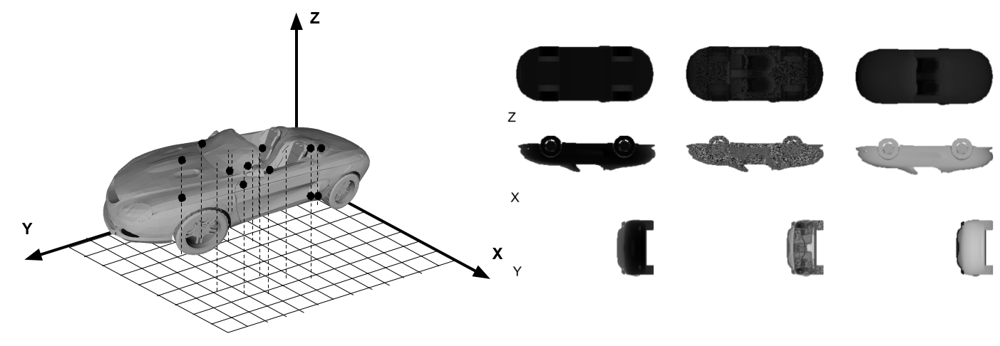 | Learning 3d shapes as multi-layered height-maps using 2d convolutional networks. K. Sarkar, B. Hampiholi, K. Varanasi, and D. Stricker. European Conference on Computer Vision (ECCV), 2018. [paper] [supplement] |
| 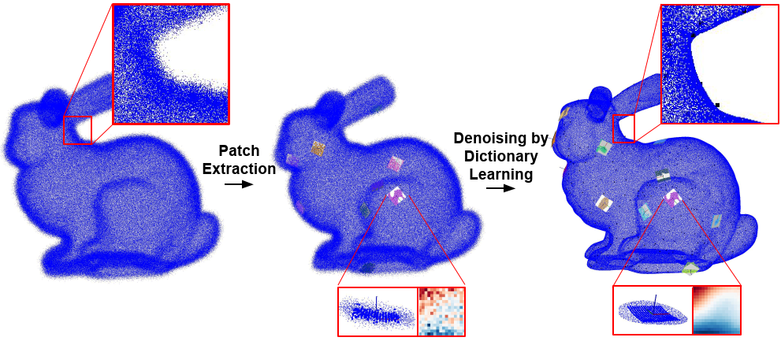 | Denoising of Point-clouds Based on Structured Dictionary Learning. K. Sarkar, F. Bernard, K. Varanasi, C. Theobal, and D. Stricker. Symposium on Geometry Processing, Eurographics Association (SGP), 2018. (invited poster) [paper] |
| 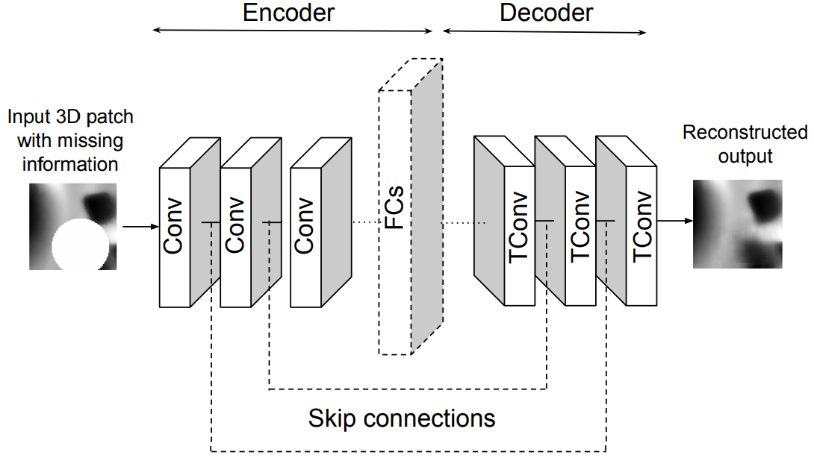 | 3D Shape Processing by Convolutional Denoising Autoencoders on Local Patches. K. Sarkar, K. Varanasi, and D. Stricker. Winter Conference on Applications of Computer Vision (WACV), 2018 [paper] |
| 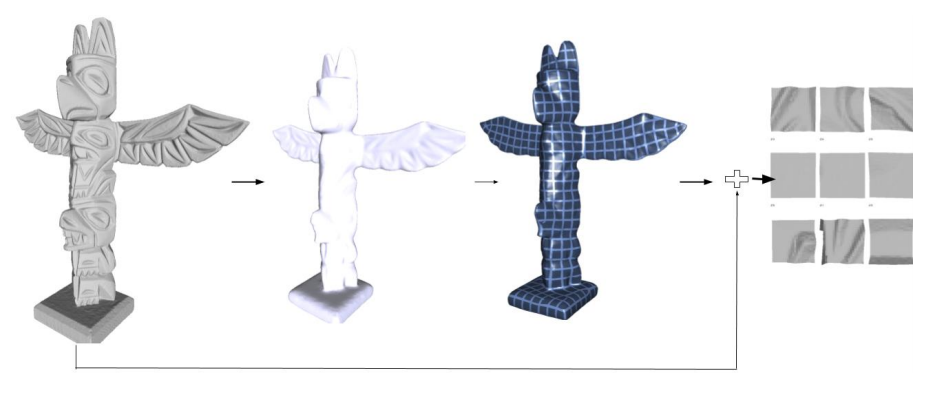 | Learning quadrangulated patches for 3d shape parameterization and completion. K. Sarkar, K. Varanasi, and D. Stricker. International Conference on 3D Vision (3DV), 2017 [paper] |
| 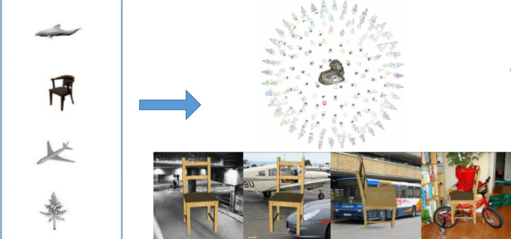 | Trained 3d models for CNN based object recognition. K. Sarkar, K. Varanasi, and D. Stricker. International Conference on Computer Vision Theory and Applications (VISAPP), 2017 [paper] |
| 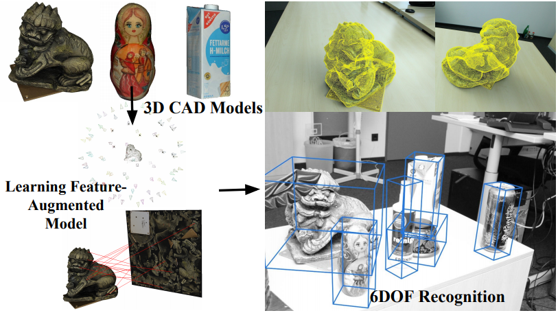 | Feature-augmented trained models for 6dof object recognition and camera calibration. K. Sarkar, A. Pagani, and D. Stricker. International Conference on Computer Vision Theory and Applications (VISAPP), 2016 [paper] |